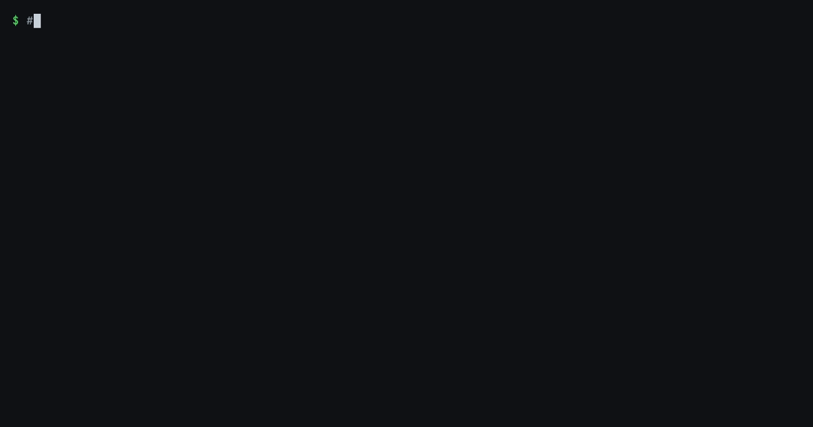
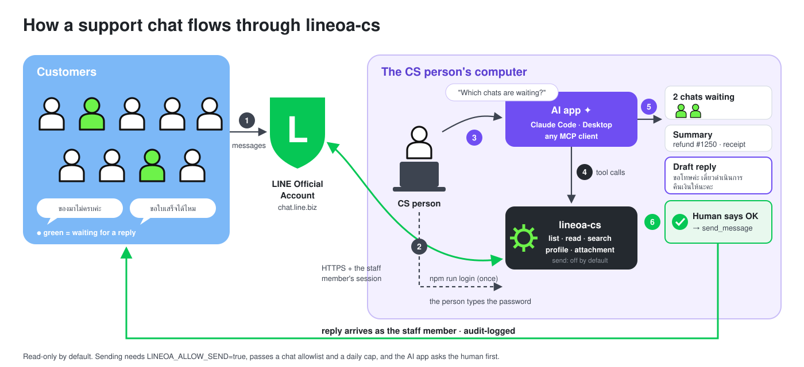
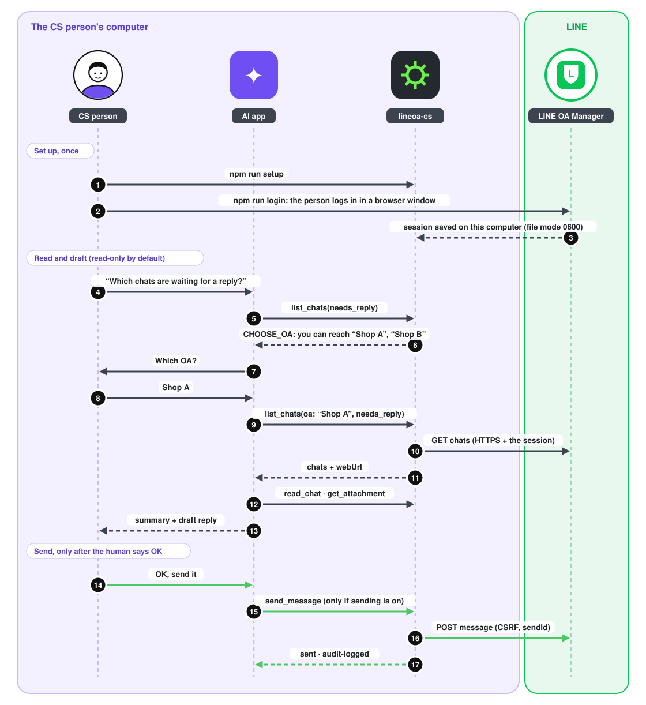
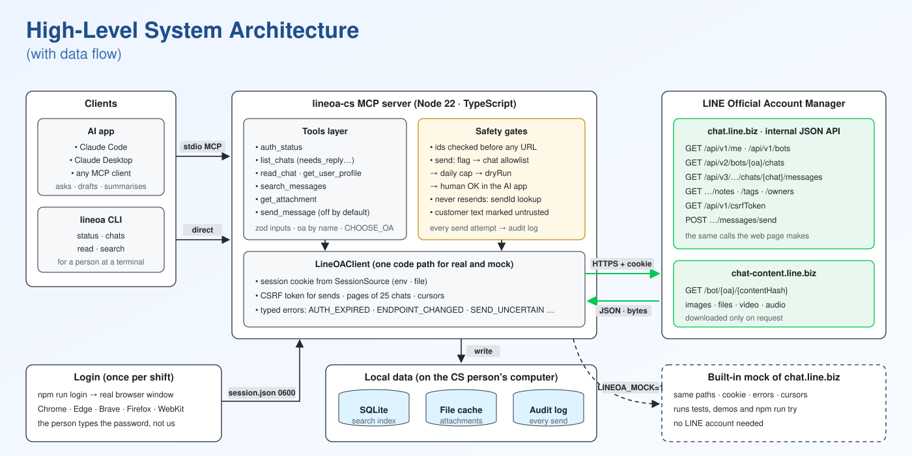
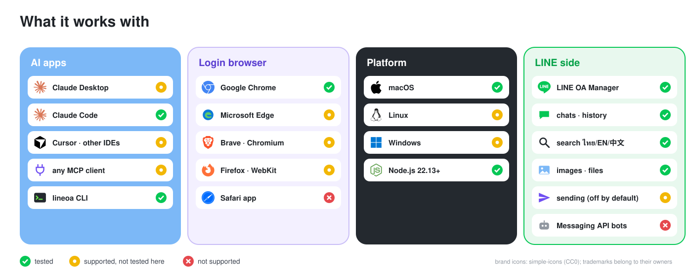

lineoa-cs
An MCP server that lets an AI app work LINE OA Manager chats the way a support person does: read, search, look at customers and files, and reply only after a human says OK.
What it can do
Who is logged in, which OAs they can reach, whether sending is on.
Chats that are ongoing, unread or waiting for a reply, with a link to open each one.
One chat's messages, newest first, with images and files marked.
The customer's name, tags, notes and the staff member assigned.
Find words in recent chats (Thai, English, Chinese) with dates.
Download an image or file; images come back small enough for the AI to look at.
Reply as the staff member. Off unless LINEOA_ALLOW_SEND=true; the AI asks the human first.
Ask in plain words, for example: "Which LINE chats are waiting for a reply?",
"Summarise the chat with … in English", "Search for 'receipt' this week".
No LINE account? The lineoa-cs-mock server answers the same questions with sample chats.
See it
• นก 🌸: asks for a refund on order #1250, items missing · open in LINE
• ทีมตัวแทนขาย (group): asks for yesterday's sales · open in LINE
Say OK and I will send it with
send_message.An example with the built-in mock's sample chats. On a live OA sending is off unless you turn it on.

npm run lineoa) on the mock.



How it was built
22 feature branches, 4 releases, and the plan and research
rounds, each merged with --no-ff. Open one to see its small commits, oldest first.
Generated from git log --first-parent dev.
researchresearch round 2 (test/research)
planplan (lane rules + context protocol)
039fc4bchore: add lane rules and context protocol for plan/dev/research sessions
researchresearch round 3 (line-api-shapes fixtures)
412f94dresearch(line-api): extract chat.line.biz API evidence from 6 source repos2dd5a5aresearch(line-api): add fake chat.line.biz fixtures for the mocka66b830docs(research): explain line-api-shapes fields, conflicts and HAR checklist18b485adocs(research): record round 3 in research STATUS and LOG
researchresearch round 4 (6 more similar systems)
planplan v3 (the support OA scope, webUrl, case layer, PII rules)
7768fd8docs(plan): pause dev and record re-scope toward the support OA case handling18e9e25docs(plan): log main-OA analysis (usage events, verified email link, proactive alerts)ab00b21docs(plan): log UX target and research comparisonb4cb23bdocs(plan): record live OA findings and read-only rule39d96a1docs(plan): add tonight's run plan to 03:00 with swimlane diagram486a05cdocs(plan): v3 — the support OA scope, webUrl, case layer, PII rules, new scheduled30f5d1docs(plan): record v3 decisions and unpause dev
planplan (Thai v3 PLAN.html, stage-based schedule)
6151703docs(plan): full Thai v3 PLAN.html with new diagrams; stages instead of clock times
planplan (single-session mode)
aad7abachore: allow single-session mode across the three lanes
researchresearch round 5 (refs comparison, research README)
planplan (Thai plan summary)
b16a8e4docs(plan): add Thai one-page plan summary (end result, use cases, folders, file counts)
planplan (checkout layout)
c8edbb2chore: main checkout follows dev; plan worktree moves to ~/.lineoa-lanes
featurefeat/scaffold
featurefeat/mock-server
featurefeat/read-core
5510ad1feat(domain): add tool-facing types and typed errors151ef08feat(domain): map raw chat.line.biz JSON to chats and messages1aa24a8feat(client): add config and the cookie-based HTTP client42a8486feat(client): add LineOAClient for the mock and the real console3f0b781feat(tools): add auth_status, list_chats and read_chatc8f6a48test(e2e): drive the server with a real MCP client against the mock
featurefeat/try-it
planplan (review rule)
47bff4cchore: require small reviewable commits and a stop after each feature
featurefeat/login
featurefeat/profile
featurefeat/needs-reply
featurefeat/search
featurefeat/attachments
5fe843bchore(deps): add sharp to shrink images for the modelb840d13feat(mock): serve attachment bytes behind the session cookie119889cfeat(attachments): sniff types, shrink images and cache files safely158946ffeat(client): download a message's image or file1adc142feat(tools): add get_attachment8f9ff4ddocs(dev): log get_attachment
featurefeat/send
1fadcfcfeat(mock): add the CSRF token and the send endpoint0c45e22feat(client): send a text message with CSRF and a sendId3e8d2b5feat(audit): log every send attempt and count today's sends786af6efeat(tools): add send_message, off unless LINEOA_ALLOW_SEND=truec8845a0docs(dev): log send_message (off by default)
featurefeat/cli
5de6647feat(auth): log in with Chrome, Edge, Brave, Chromium, Firefox or WebKite6ba9e7fix(client): fetch chats 25 at a timebd39385fix(mock): reject chat pages over 25 like the real console95b75b7feat(cli): add the lineoa terminal command with colored output761beb4feat(cli): lineoa setup adds the server to Claude Desktop and Claude Coded3eceb0docs(dev): log CLI, browser choice and one-step setup
featurefeat/extend
planplan (doc map)
3e6ab4cdocs(plan): point the doc map at the README, Thai guide and CONTRIBUTING
featurefeat/neutral-readme
4830c87docs: make the README product-neutral
planplan (neutral CLAUDE.md)
3f2e053chore: describe the project without a company name
researchresearch (company-neutral fixtures)
a8ec4ecresearch: make fixture shop names company-neutral
featurefeat/choose-oa
planplan (company-neutral plan docs)
be4a847docs(plan): describe what the system does, without a company scenario
releaserelease/v0.1.0
0705342chore(release): v0.1.0
featurefeat/polish
708d4b8chore: clear lint warnings and test-output noiseca64af6docs: note that Messaging API bot replies can be invisible67e8ac0fix(security): refuse ids that could rewrite the request path07a3a2efix(security): send LINE cookies only to line.biz and its subdomainsaeca107fix(config): reject bad numbers instead of disabling limits000b3f2fix(send): count uncertain sends, look harder for the echo, keep audit failures apart741e127fix(search): whole-day date range, text-only matches6f4d784fix(list): filtered lists read more pages; CLI uses the same filters72722b9fix(client): a missing list in a response is ENDPOINT_CHANGED9052d8bfix(attachments): stop downloads at the size cap while streamingc338b7bfix(setup): work on Windowsa479d09docs(dev): log the grader dry-run and review fixes
releaserelease/v0.1.1
744e878chore(release): v0.1.1
featurefeat/readme-showcase
featurefeat/diagram-style
featurefeat/flow-linear
featurefeat/history-guide
fdf7d68docs: show how to read the git history one level at a time
releaserelease/v0.1.3
cd4e12fchore(release): v0.1.3
featurefeat/fresh-clone-fixes
releaserelease/v0.1.4
2f4341achore(release): v0.1.4